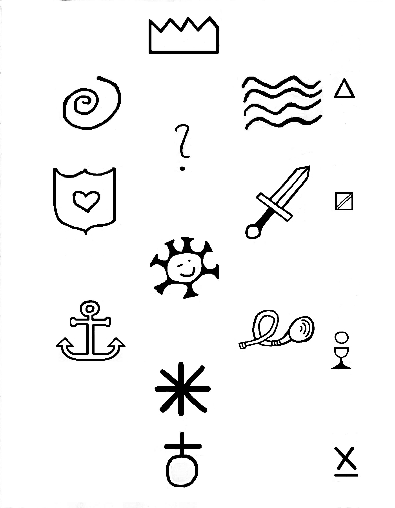

De weg naar Santiago de Compostella
De levensboom in symbolen
In de bijbel staat dat Mozes van de berg kwam met tien woorden. Deze woorden zijn de essentie van de levensboom, en verbonden aan die woorden zijn o.a. de tien geboden, maar ook de dimensies, hemellichamen, aartsengelen, de mens Adam Kadmon, ... Over de levensboom kan men blijven studeren en filosoferen, maar de essentiële tien woorden vormen de basis. Hier symbolisch afgebeeld. Kroon, Wijsheid, Inzicht, Oordeel, Genade, Schoonheid, Glorie, Standvastigheid, Fundament en Koninkrijk. Er bestaat nog een elfde woord, dat meestal verborgen blijft. Het is het vraagteken, en staat voor verborgen kennis.
